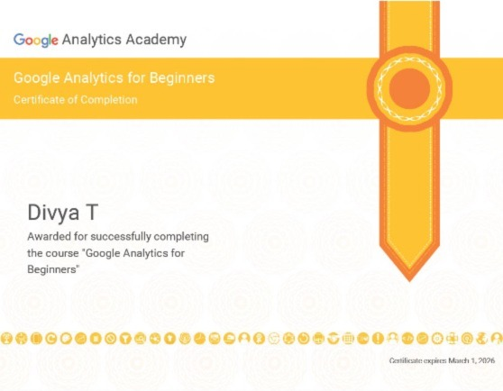
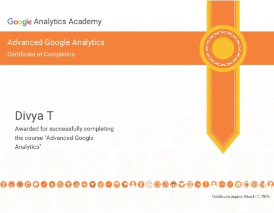
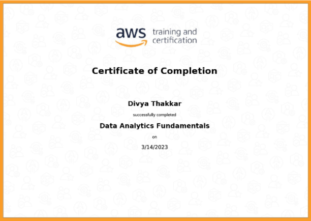

Data Science skills learned:
- Statistical Analysis, Python programming with NumPy, pandas, matplotlib, and Seaborn, Advanced statistical analysis, Tableau, Machine Learning with stats models and scikit-learn, Deep learning with TensorFlow
- To pre-process data
- Created Machine Learning algorithms in Python, using NumPy, statsmodels and scikit-learn
Statistics for Data Science and Business Analysis

Statistics skills learned:
- Performed hypothesis testing
- Understood the mechanics of regression analysis
- Calculate the measures of central tendency, asymmetry, and variability
Google Analytics for Beginners

Analytical skills learned:
- Created an account, implemented tracking code, and set up data filters
- Familiar with Google Analytics interface and reports, and set up dashboards and shortcuts
- to track campaigns and basic Audience, Acquisition, and Behavior reports
Advanced Google Analytics

Analytical skills learned:
- Configured custom dimensions , custom metrics, and event tracking specific to business
- Advanced analytics techniques using segmentation, channel reports, audience reports, and custom reports
Data Analytics Fundamentals

Analytical skills learned:
- Identified the characteristics of data analysis solutions and the characteristics that indicate such a solution may be required
- Defined data storage types such as data lakes, AWS Lake Formation, data warehouses, and the Amazon Simple Storage Service (Amazon S3)